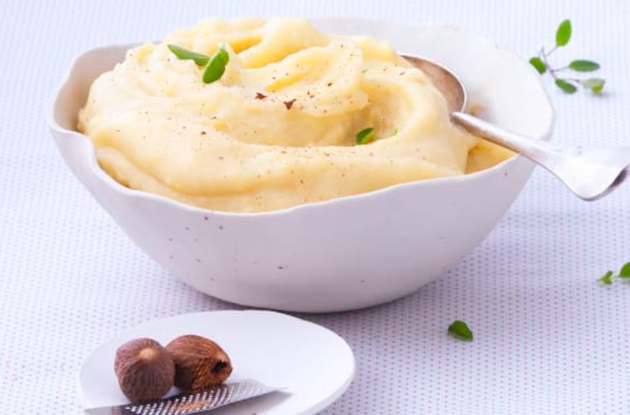

Purée (Thermomix)
Ingredients
4×
- 1 kg de pommes de terre en rondelles de 0,5cm
- 1 c. à c. de sel
- 350 g de lait
- 30 g de beurre
- 1 à 2 pincées de muscade

Préparation
Étape 1
Mettre 1 kg de pommes de terre en rondelles de 0,5cm, 1 c. à c. de sel et 350 g de lait dans le bol. Cuire 35 min/95ºC/vitesse 1 sans le gobelet doseur.
Étape 2
Ajouter 30 g de beurre et 1 à 2 pincées de muscade, mixer 30 sec/vitesse 4.
Conseils
- Pour une purée plus aérienne, insérer le fouet et fouetter 20 sec/vitesse 3.5.